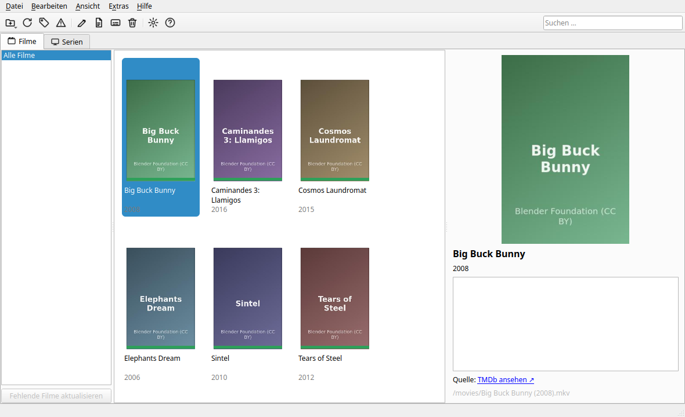

Ein Dateimanager für Filme und Serien: Ordner einlesen, Metadaten von TMDb/OMDb/TheTVDB holen, nach Vorlage umbenennen. Gebaut, weil Sonarr und tinyMediaManager für eine kleine private Sammlung mehr Aufwand machen, als sie einem abnehmen.
Oberfläche auf Deutsch und Englisch, umschaltbar im laufenden Betrieb.
Erkennt gängige Szene-Konventionen (S01E05, 1x05),
Mehrfach-Episoden wie S01E01E02 vollständig und Anime-Nummerierung
ohne Staffelangabe. Samples/Trailer fliegen raus, ohne echte Episodentitel
mit „Extra“ im Namen zu verwechseln.
Bewertet Kandidaten nach Titel und Jahr. Unsichere Treffer bleiben markiert, statt falsch automatisch zugeordnet zu werden — Nachtragen per Doppelklick oder direkt per TMDb-/IMDb-Link.
Rechtsklick auf einen Film oder eine Serie → nur diesen einen Ordner neu einlesen, statt jedes Mal die ganze (oft riesige) Bibliothek zu durchsuchen.
Filmreihen gruppieren sich automatisch. Bei ausgewählter Sammlung oder Serie zeigt „Fehlende Teile“, was laut TMDb noch aussteht.
Vorschau vor jeder Änderung, nichts wird vorher auf der Platte angefasst. Eigene Vorlagen für Filme und Serien, inklusive Mehrteiler-Platzhalter.
Kodi-/Jellyfin-/Plex-kompatible .nfo-Dateien auf Wunsch,
Untertitel-Download über OpenSubtitles in den konfigurierten Sprachen.
Filmraster mit Metadaten-Panel im laufenden Betrieb.

Fertige Pakete für Windows/macOS unter Releases — unsigniert, deshalb beim ersten Start je einmal „Trotzdem ausführen“ (Windows) bzw. Rechtsklick → Öffnen (macOS) bestätigen. Aus dem Quelltext (Linux und alle anderen) reicht Python 3.10 oder neuer:
git clone https://github.com/aaaaaprvdgrwwelt/deskkit.git
git clone https://github.com/aaaaaprvdgrwwelt/moviedesk.git
cd moviedesk
python3 -m venv .venv
.venv/bin/pip install -r requirements.txt./moviedesk.sh # oder: .venv/bin/python -m moviedesk
./install-desktop.sh # Eintrag im Anwendungsmenü anlegen (Linux)Alle vier optional, einzeln unter Einstellungen → Quellen/Untertitel abschaltbar. API-Keys landen im System-Schlüsselbund statt im Klartext.
| Quelle | Wofür | Key |
|---|---|---|
| TMDb | Titel, Jahr, Poster, Genres — Filme und Serien. Ohne diesen Key funktioniert die automatische Zuordnung praktisch nicht. | ja, kostenlos |
| TheTVDB | Alternative für Serien mit guter Staffelstruktur | ja, kostenlos |
| OMDb | ergänzt IMDb-Rating, hilft bei IMDb-Link-Zuordnung | ja, kostenlos |
| OpenSubtitles | Untertitel-Download | ja, kostenlos |
Frei einstellbar unter Einstellungen → Umbenennen. Ein /
legt eine neue Ordnerebene an.
Filme: {title} {year} {ext}
Serien: {series} {year} {season} {episode} {episode_end} {episode_title} {ext}{year} ist das Jahr der Erstausstrahlung,
{episode_end} nur bei Mehrteilern wie S01E01E02 belegt
(sonst leer).
| Kürzel | Aktion |
|---|---|
F5 | Scannen |
Strg+T | Automatisch zuordnen |
Strg+M | Fehlende Teile … |
Strg+R | Umbenennen … |
Strg+F | Suchen |
Entf | Löschen … |